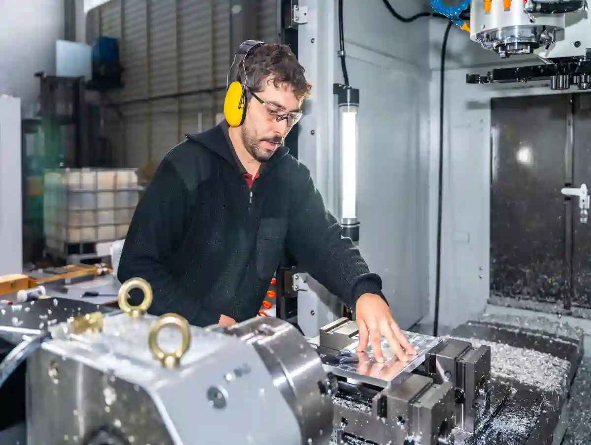
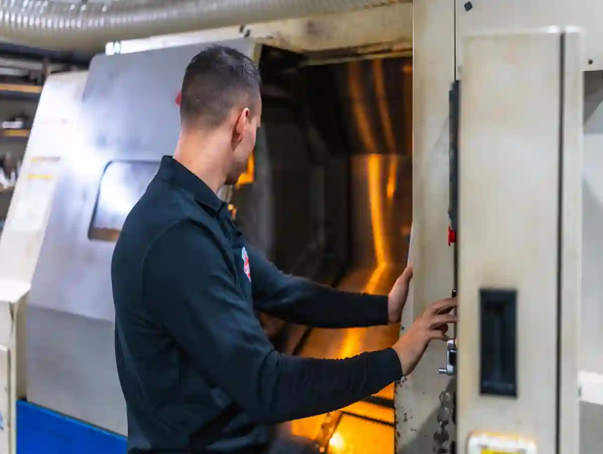
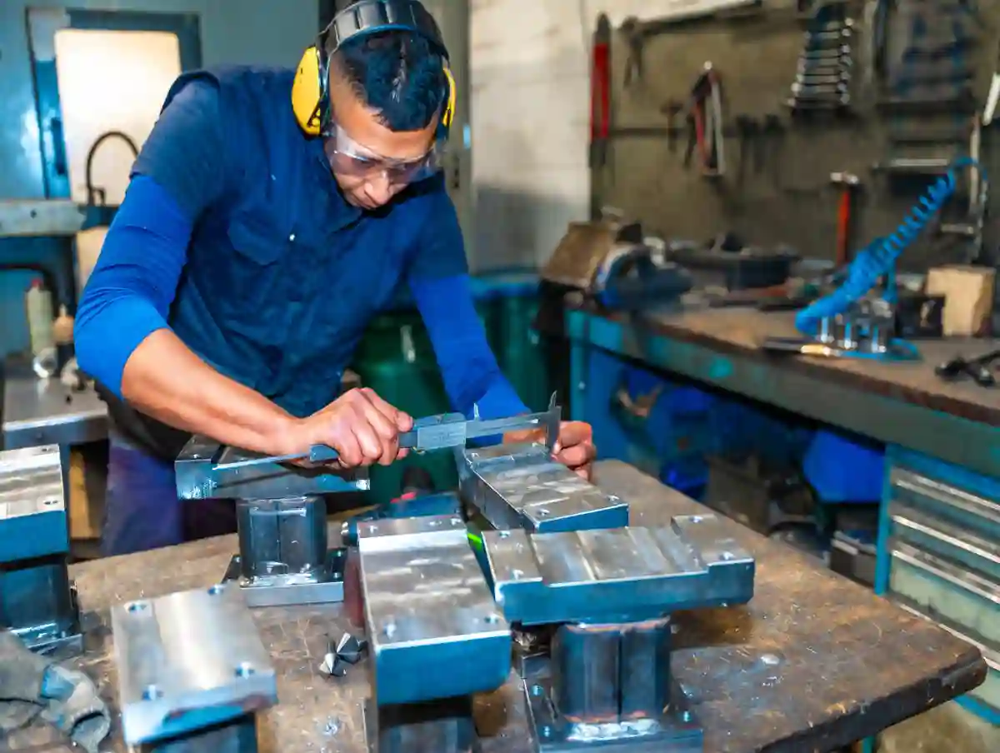
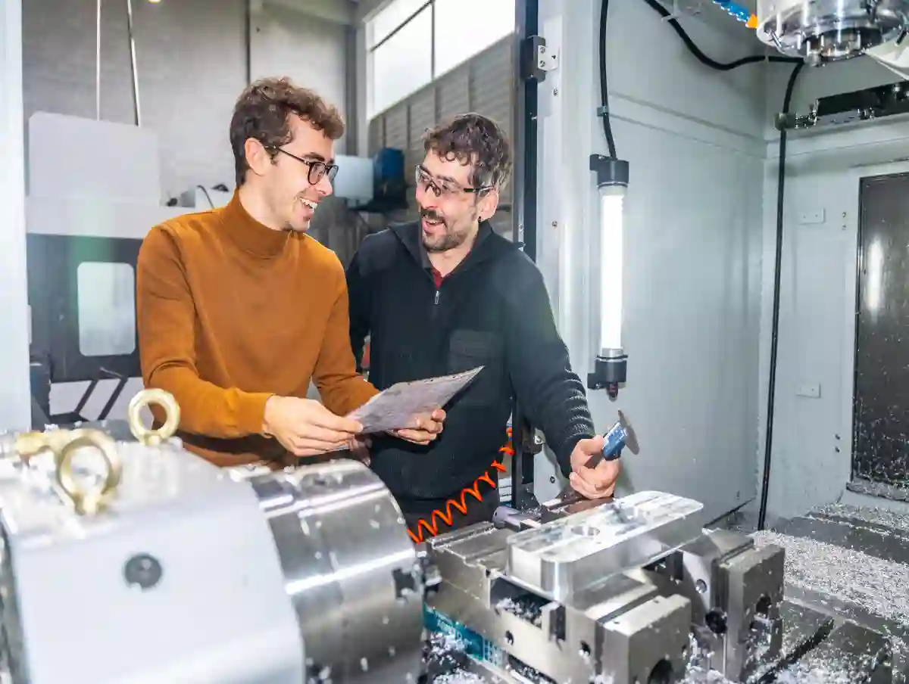

Fason İmalat Rehberi: Avantajlar ve Riskler
Fason üretim kararının “doğru” ya da “yanlış” olması; parça geometrisi, tolerans seviyesi, yıllık adet, termin baskısı, kalite doğrulama altyapısı ve tedarikçi olgunluğu gibi değişkenlerin toplamına bağlıdır. Bu yazı, fason imalat rehberi perspektifiyle, özellikle CNC parça üretiminde dış kaynak kullanmanın (taşeron/alt yüklenici) getirdiği teknik kazanımları ve yönetilmesi gereken riskleri sahadan uygulanabilir bir çerçeveyle ele alır.
Türkiye’de özellikle Ankara gibi sanayi ekosistemi güçlü bölgelerde işletmeler; yüksek hassasiyetli parçaları, prototipleri veya seri üretim bileşenlerini dışarıdan tedarik ederek kapasite açığını kapatır. Ancak dış kaynak cnc imalat doğru tasarlanmadığında; tolerans kaçakları, yüzey kalitesi sapmaları, revizyon karmaşası ve teslimat gecikmeleri “maliyet avantajı” diye başlayan süreci pahalı bir probleme çevirebilir.
Bu rehber boyunca iki hedefi birlikte tutacağız:
- Fason parça üretimi avantajlarını netleştirmek,
- Fason cnc üretim risklerini ölçülebilir kontrol adımlarına bağlamak.
Fason Cnc İmalat Nedir? (Tanım ve Kapsam)
Kısa tanım: fason cnc imalat nedir sorusunun cevabı; parçanın üretim operasyonlarının (tornalama, frezeleme/dik işleme, delik–diş, yüzey işlemleri, kaynak–montaj, ölçüm/raporlama vb.) bir kısmının veya tamamının, sözleşmeli bir üretici tarafından gerçekleştirilmesidir. “Fason” burada yalnızca tezgâh zamanı satın almak değildir; çoğu projede proses planlama, takım seçimi, fikstürleme, ölçüm stratejisi ve dokümantasyon disiplinini de kapsar.

Fason Üretim Türleri (CNC Odaklı)
- Operasyon bazlı fason: Sadece tornalama veya sadece dik işleme gibi tek bir proses dışarı verilir.
- Uçtan uca fason: Ham malzemeden bitmiş parçaya kadar tüm süreç yürütülür.
- Hibrit model: Kritik toleranslı operasyon içeride, yardımcı operasyonlar dışarıda yapılır.
Bu ayrım önemli; çünkü risk profilini değiştirir. Örneğin uçtan uca modelde izlenebilirlik ve revizyon yönetimi daha kritik hale gelir.
Neden Şirketler Dış Kaynak CNC İmalata Gider?
Dış kaynak kullanımı, yalnızca “işi dışarı yaptırmak” değildir; doğru kurgulandığında üretim planlamasını stratejik bir araca dönüştürür. Özellikle kapasite doluluğu yüksek dönemlerde, yeni işlerin tezgâh sırasına girmesi haftaları bulabilir. Bu noktada dış kaynak cnc imalat, işletmenin teslim tarihlerini korumasına ve müşteri memnuniyetini sürdürülebilir hale getirmesine yardımcı olur. Ayrıca bazı parçalar, özel bağlama, yüksek hassasiyet, belirli takım–parametre bilgisi veya gelişmiş ölçüm altyapısı gerektirir. Şirketler bu yetkinlikleri her zaman içeride tutmak yerine, doğru tedarikçiden süreç bazlı destek alarak esneklik kazanır.
Tek bir cümleyle: Mühendislik ekibi “tasarım ve ürün” odağını korurken üretim tarafında kapasite, teknoloji ve termin esnekliği kazanmak ister.
Kapasite ve Termin Esnekliği
Kendi atölyenizde tezgâh doluluğu yüksekse, yeni işin “en erken” başlangıç tarihi uzar. Bu noktada dış kaynak cnc imalat; proje takvimini koruyan bir tampon görevi görür.
Tezgâh/Yetkinlik Açığını Kapatma
Bazı parçalar 4–5 eksen işleme, özel bağlama, ince cidar kontrolü veya belirli ölçüm ekipmanı ister. Bu ekipman ve know-how yatırımı her firma için rasyonel olmayabilir.
Prototipten Seriye Geçiş Hızını Artırma
Ar-Ge parçası hızlı üretilir, testten gelen revizyonlar kısa döngüyle uygulanır. Bu akış iyi yönetildiğinde dış kaynak, ürün geliştirme hızını belirgin artırır.
Bu noktada üretimi “tek çatı altında” yönetebilen bir yapı özellikle avantajlıdır. AYMAKSAN’ın hizmet mimarisinde CNC tornalama, freze/dik işleme, kaynak–montaj ve kalite kontrolün entegre sunulması bu tür projelerde koordinasyon riskini azaltır.
İç Kaynak mı, Dış Kaynak mı? (Karar Sorusu)
Karar cümlesi şu olmalı: “Bu parçada en kritik kısıtım ne?”
- Tolerans mı?
- Yüzey kalitesi mi?
- Termin mi?
- Maliyet mi?
- Dokümantasyon/izlenebilirlik mi?
Bu soruya tek bir cevap yok; ama doğru soruyu sormak, fason imalat rehberi yaklaşımının temelidir.
Fason Parça Üretimi Avantajları (Gerçek Kazanımlar)
Fason üretimin gerçek kazancı, yalnızca birim fiyat karşılaştırmasıyla anlaşılmaz; toplam süreç performansını iyileştirdiği ölçüde değer üretir. İyi seçilmiş bir tedarikçi, kurulum sürelerini kısaltarak çevrim zamanını düşürür; bu da aynı termin içinde daha fazla parça çıkmasına imkan verir. Ayrıca tekrarlanabilir proses, ölçüm disiplini ve raporlama alışkanlığı sayesinde kalite dalgalanmaları azalır. fason parça üretimi avantajları arasında kapasite tamponu oluşturmak, acil işlerde esneklik sağlamak, prototip–seri geçişini hızlandırmak ve revizyon döngülerini daha kontrollü yürütmek de yer alır. Sonuçta firma, üretim riskini daha yönetilebilir hale getirir.
Birçok firma “fason = ucuz” varsayımıyla hareket eder. Oysa fason parça üretimi avantajları yalnızca fiyat değil; hız, kalite sürekliliği, kapasite yönetimi ve proje riskinin azaltılmasıdır.

Maliyet Avantajı Nereden Gelir?
- Sabit yatırımın azalması: Tezgâh, bağlama aparatları, ölçüm ekipmanı, bakım–kalibrasyon gibi giderler.
- Ölçek ekonomisi: Fason üretici benzer parçaları arka arkaya işleyerek kurulum sürelerini düşürür.
- Fire ve yeniden işleme azalması: Olgun proses, doğru takım–parametre ve ölçüm planıyla hata oranını düşürür.
Burada kritik nokta: Maliyet avantajı “birim fiyat” ile değil toplam sahip olma maliyeti ile hesaplanır. Birim fiyat düşük olup iade–yeniden işleme yüksekse, toplam maliyet büyür.
Termin ve Esneklik Avantajı
Dış kaynak kullanımı; kapasite tıkanıklıklarında üretimi paralel hatlara bölmeye imkân verir. Özellikle küçük–orta seri parçalarda, doğru tedarikçiyle termin performansı belirgin artar. Bu avantajı kalıcı kılmak için sözleşmede “termin tanımı” net olmalıdır: sevk tarihi mi, kabul onayı mı, rapor teslimi mi?
Kalite ve Tekrarlanabilirlik (Doğru Kurgu ile)
Kaliteyi yükselten şey “dışarıda üretilmesi” değildir; prosesin standardize edilmesi ve ölçülebilir kontrol sistemidir. ISO 9001 gibi kalite yönetim yaklaşımı; proseslerin tanımlanması ve risk tabanlı yönetim mantığıyla bu standardizasyonu destekler. Bu konuda referans olarak TS EN ISO 9001 Kalite Yönetim Sistemi sayfasını inceleyebilirsiniz.
Uzmanlık ve Teknoloji Erişimi
Bazı tolerans seviyelerinde süreç; tezgâh kadar ölçüm altyapısı ve operatör/mühendislik alışkanlıklarına bağlıdır. Metroloji yaklaşımı ve ölçüm izlenebilirliği; özellikle kritik ölçülerde güven sağlar. Bu konuda Türkiye’nin ölçüm altyapısında önemli bir kurum olan TÜBİTAK UME (Ulusal Metroloji Enstitüsü) sayfası, ölçüm izlenebilirliği kavramını anlamak için iyi bir başlangıçtır.
“Avantaj”ın Şarta Bağlı Olduğu 5 Teknik Koşul
Fason modelin “avantaj” üretmesi, bazı teknik koşulların aynı anda sağlanmasına bağlıdır. Birincisi, teknik resim ve tolerans tanımları nettir; GD&T, yüzey pürüzlülüğü, ısıl işlem/kaplama notları ve revizyon bilgisi yoruma açık bırakılmamalıdır. İkincisi, kritik ölçüler ve fonksiyonel yüzeyler açıkça işaretlenmelidir; aksi durumda kontrol eforu yanlış yere gider. Üçüncüsü, ölçüm planı ve raporlama formatı baştan belirlenmelidir: ilk parça onayı (FAI), seri örnekleme sıklığı, ölçüm cihazı beklentisi ve kabul kriterleri net olmalıdır.
Dördüncüsü, proses planı ve bağlama yaklaşımı tedarikçi tarafından şeffaf biçimde anlatılmalı; operasyon sırası, riskli bölgeler (ince cidar, derin delik, hassas yataklama) ve takım stratejisi doğrulanmalıdır. Beşincisi, revizyon ve değişiklik yönetimi disiplinli yürümelidir; hangi revizyonun üretimde olduğu, eski revizyon stoklarının durumu ve yeni revizyonun devreye alma tarihi yazılı hale getirilmelidir. Bu beş şart sağlandığında fason parça üretimi avantajları gerçek anlamda ortaya çıkar; aksi halde maliyet ve termin kazanımı kısa sürede kalite problemlerine yenilir.
Teknik Resim ve Ölçü Tanımları Net mi?
Geometrik toleranslar (GD&T), yüzey pürüzlülüğü (Ra), malzeme standardı, ısıl işlem/kaplama notları net değilse; fason üretimde yorum farkı doğar.
Kritik Ölçüler Tanımlandı mı?
Parçada “fonksiyonel” ölçüler ile “kozmetik” ölçüler aynı önemde değildir. Kritik ölçü listesi verilmezse; fason üretici kontrol eforunu yanlış yere harcar.
Ölçüm Planı ve Rapor Formatı Belirlendi mi?
İlk parça onayı, numune ölçüm raporu, seri ölçüm sıklığı (AQL/örnekleme), Cpk hedefleri gibi parametreler projeye göre belirlenmelidir.
Revizyon ve Değişiklik Yönetimi Kurgulandı mı?
Revizyon geldiğinde; hangi revizyonun üretimde olduğu, stoktaki parçanın statüsü ve yeni revizyonun devreye giriş tarihi açık olmalıdır.
Tedarikçi İletişim Ritmi Var mı?
Haftalık üretim planı, risk–aksiyon listesi, termin izleme; “sessiz” projelerde gecikmeyi geç fark etmenize neden olur.
Bu avantaj koşullarını pratikte desteklemek için üretim yaklaşımınızı “hizmet + kalite kontrol” bütünlüğünde ele almanız gerekir. Örneğin AYMAKSAN tarafında hizmetlerin menü yapısında kalite kontrol ve ölçümün ayrı bir hizmet olarak konumlanması, proje yönetiminde kontrol disiplinini güçlendiren bir sinyaldir.
Fason Cnc Üretim Riskleri (Gerçekçi ve Yönetilebilir)
Fason süreçlerde risk çoğu zaman “bilinmezlik”ten değil, beklentinin doğru tanımlanmamasından doğar. Parçanın hangi ölçülerinin kritik olduğu, hangi yüzeylerin fonksiyon taşıdığı veya hangi proseslerin hassasiyet gerektirdiği açık yazılmadığında; tedarikçi kendi alışkanlıklarına göre karar verir. Bu da tolerans kaçakları, yüzey kalitesi sapmaları, revizyon karışıklığı ve termin kaymalarını tetikler. Oysa fason cnc üretim riskleri, doğru kontrol kapıları ve net dokümantasyonla ciddi ölçüde azaltılabilir. Bu bölümde riskleri “korkutmak” için değil; sahada uygulanan pratik kontrol adımlarına bağlamak için ele alacağız.
Şimdi “kötü senaryoları” konuşalım. Çünkü fason cnc üretim riskleri çoğu zaman öngörülebilir ve doğru kontrol adımlarıyla azaltılabilir.

Kalite Sapması Riski (Tolerans, Yüzey, Geometri)
En sık görülen 3 risk:
- Tolerans kaçakları,
- Yüzey pürüzlülüğü hedefinin tutmaması,
- Geometrik doğruluk (diklik, paralellik, run-out) sapmaları.
Bu riskleri azaltmak için ilk parça onayı ve süreç içi kontrol (in-process) şarttır. Bu konuda, tolerans yönetiminin neden “proses + ölçüm” birleşimi olduğunu anlamak için CNC Üretimde Tolerans ve Hassasiyet Yönetimi içeriğini ilgili bölümde referans alabilirsiniz.
Termin ve Planlama Riski
Termin gecikmesi genellikle tek nedenden olmaz: malzeme tedariki, takım kırılması, fikstür revizyonu, operatör/tezgâh kapasitesi ve ölçüm bekleme süresi zincirleme etki üretir. Bu yüzden termin yönetimi; “tahmin” değil, görünür metrikler ister:
- Planlanan/gerçekleşen operasyon bitiş tarihleri
- Kritik yol (critical path) takibi
- Risk–aksiyon listesi (haftalık)
Gizlilik ve Know-How Sızıntısı
Özellikle özgün tasarımlarda; teknik resmin dolaşımı, CAD dosyalarının paylaşımı ve alt yüklenici ağındaki görünürlük risk yaratır. Burada doğru yaklaşım: kapsamlı bir NDA + dosya erişim disiplinidir (kim, neyi, hangi formatta alıyor?).
Revizyon Karmaşası (V1–V2–V3 Kargaşası)
“Revizyon yönetimi yoksa” fason üretimde en pahalı hata budur: yanlış revizyon üretimi. Çözüm; revizyon matrisi + onay akışı:
- Revizyon numarası
- Değişen ölçü/özellik listesi
- Uygulama başlangıç tarihi
- Eski revizyon stoklarının durumu
Alt Süreç Riskleri (Isıl İşlem, Kaplama, Sertlik)
CNC sonrası süreçlerde; ölçü değişimi (distorsiyon), kaplama kalınlığı ve sertlik hedefi gibi parametreler kritik hale gelir. Bu noktada, uluslararası referans olarak ISO 9001:2015 gereklilikleri gibi çerçeveler, “dokümantasyon ve proses kontrol” mantığını anlatır.
Riskleri Azaltan “3 Kapı” Modeli
“3 Kapı” modeli, fason üretimi kontrol edilebilir hale getiren basit ama etkili bir çerçevedir. Kapı-1 (Teklif Öncesi Uygunluk) aşamasında; malzeme bulunabilirliği, tezgâh–fikstür uygunluğu, ölçüm altyapısı ve termin gerçekçiliği doğrulanır. Burada amaç, üretim başlamadan riskleri görünür kılmaktır. Kapı-2 (İlk Parça Onayı / FAI) aşamasında; kritik ölçüler için ölçüm raporu, gerekiyorsa yüzey pürüzlülüğü doğrulaması, geometrik kontroller (diklik, paralellik, run-out) ve proses notları kayıt altına alınır.
Bu kapı geçilmeden seri üretime başlanmaz; böylece “yanlış doğru”nun seri halinde çoğalması engellenir. Kapı-3 (Seri Üretim Kontrol Disiplini) aşamasında ise örnekleme planı, proses içi ölçüm sıklığı, lot bazlı izlenebilirlik ve uygunsuzluk yönetimi devreye girer. Bu üç kapı birlikte çalıştığında fason cnc üretim riskleri ölçülebilir bir sisteme dönüşür: sapmalar erken yakalanır, revizyonlar doğru yönetilir ve termin performansı gerçek verilerle izlenir. Sonuç, daha az iade–yeniden işleme ve daha yüksek teslimat güvenidir.
Kapı-1: Teklif Öncesi Teknik Uygunluk
- Malzeme bulunabilirliği
- Tezgâh/bağlama uygunluğu
- Ölçüm ekipmanı yeterliliği
- Termin gerçekçiliği
Kapı-2: İlk Parça Onayı (FAI)
- Ölçüm raporu (kritik ölçüler)
- Yüzey pürüzlülük doğrulaması
- Fonksiyonel deneme (varsa)
- Foto/işlem notları
Kapı-3: Seri Üretim Kontrol Disiplini
- Örnekleme planı
- Proses içi ölçüm
- İzlenebilirlik (lot, malzeme sertifikası, operatör/tezgâh kaydı)
Kalite kontrol disiplinini derinleştirmek için de Özel Parça Kalite Kontrol ve Ölçüm Süreçleri sayfasını aynı kapsamda iç referans olarak konumlayabilirsiniz.
Dış Kaynak Cnc İmalat Süreci Nasıl Yönetilir? (Adım Adım)
Dış kaynak üretimde başarı, “iyi tedarikçi buldum” demekle değil, süreci baştan sona yönetecek bir işletim modeli kurmakla gelir. Çünkü fason işler; teknik resim, proses planı, ölçüm, revizyon ve termin gibi birçok değişkenin aynı anda uyumlu çalışmasını gerektirir. Bu nedenle doğru yaklaşım, işi operasyona bırakmak yerine projeyi bir üretim akışı gibi yönetmektir. dış kaynak cnc imalat süreci; RFQ teknik paketinin hazırlanması, tedarikçi skorlaması, sözleşme–kabul kriterleri, ilk parça onayı ve seri kontrol rutiniyle adım adım kontrol altına alınır. Aşağıdaki adımlar, pratikte “sorunsuz” akışın iskeletini oluşturur.
Bu bölüm fason imalat rehberinin “uygulama” kısmı: doğru tedarikçiyi seçmek kadar, süreci doğru yönetmek de sonucu belirler.

1) Teknik Paket Hazırlığı (RFQ Dosyası)
Minimum set:
- PDF teknik resim + revizyon bilgisi
- Malzeme standardı ve sertifika beklentisi
- Yüzey pürüzlülüğü (Ra) ve kritik yüzeyler
- Isıl işlem/kaplama gereksinimleri
- Kritik ölçü listesi + ölçüm yöntemi beklentisi
- Termin hedefi + sevk şekli
Burada “kısa ama net” olmak kazandırır. Gereksiz sayfalar yerine kritik bilgiyi öne çıkarın.
2) Tedarikçi Değerlendirmesi (Skor Kartı Mantığı)
Skor kartında şu başlıklar olmalı:
- Tezgâh kabiliyeti (eksen, tabla, bağlama)
- Ölçüm altyapısı ve raporlama alışkanlığı
- Proses kontrol (ilk parça, seri kontrol)
- Termin performansı (geçmiş referans)
- Revizyon yönetimi disiplini
Tedarikçi; “fiyat veren” değil, “proses anlatan” olmalı.
3) Sözleşme ve Sipariş Maddeleri (Teknik Odaklı)
Sözleşmede özellikle:
- Revizyon değişikliklerinde sorumluluk
- Kabul kriterleri (ölçüm raporu, yüzey, sertlik)
- Uygunsuzluk süreci (iade, yeniden işleme, iskonto)
- Gizlilik (NDA)
- Termin gecikmesi durumunda aksiyon
4) Üretim Başlangıcı: Proses Onayı
Üretime başlamadan “kısa bir proses toplantısı” yapın:
- İşleme sırası
- Kritik operasyonlar
- Fikstür yaklaşımı
- Ölçüm planı
- Riskli noktalar (ince cidar, derin delik, vb.)
Bu toplantı 30 dakika sürer; ama günler kazandırır.
5) Takip: Haftalık Görünürlük Rutini
Haftalık tek sayfa rapor:
- Üretilen adet / kalan adet
- Operasyon bazlı durum
- Riskler ve aksiyonlar
- Beklenen sevk tarihi
Bu rutin, dış kaynak cnc imalat sürecini “kontrol edilebilir” yapar.
Doğru Hizmet Kapsamını Seçmek (Tornalama–Frezeleme–Montaj)
Parçanın geometrisi neyi gerektiriyorsa onu seçin; ama tek bir tedarikçide entegre yürütmek koordinasyon riskini azaltır. Bu noktada, ihtiyaç bazlı şu iç sayfaları doğal biçimde kullanın:
- CNC Tornalama (dönel parçalar)
- CNC Frezeleme ve Dik İşleme (prizmatik/karmaşık geometri)
- Özel Talaşlı İmalat Hizmetleri (uçtan uca yaklaşım)
Fason Üretim mi Kendi Üretim mi? (Karar Matrisi)
Kararı doğru vermek için önce “hedefi” netleştirmek gerekir: Bu işte öncelik maliyet mi, termin mi, kalite tekrarlanabilirliği mi, yoksa kapasite sürekliliği mi? Çünkü aynı parça, farklı iş hedeflerinde bambaşka bir üretim modeline daha uygun olabilir. Örneğin toleransı dar, ölçüm yükü yüksek ve revizyon ihtimali bulunan parçalarda dış kaynak modeli; yatırım yapmadan uzmanlık ve ölçüm altyapısına erişim sağlayabilir.
Buna karşılık adetleri yükselen, tasarımı stabil ve proses penceresi oturmuş ürünlerde kendi üretim; birim maliyeti aşağı çekip planlama kontrolünü artırabilir. Ayrıca tedarik zinciri riski, gizlilik ihtiyacı ve iç ekipte proses geliştirme hedefi gibi faktörler de kararın teknik tarafını etkiler. Bu nedenle karar, “hangi model daha mantıklı” sorusundan önce, “bu parça için kritik kısıtım ne” sorusuyla başlar; sonra hesaplanır, test edilir ve uygulanır.
Bu soru “duygusal” değil, sayısal ve teknik bir karar olmalı. fason üretim mi kendi üretim mi sorusunu aşağıdaki 6 parametreyle çözebilirsiniz.
1) Yıllık Adet ve Ürün Ömrü
Yıllık adet yükseldikçe iç üretim yatırımı daha anlamlı hale gelir. Ancak ürün ömrü kısa (revizyonlu) ise dış kaynak daha çevik kalabilir.
2) Tolerans Seviyesi ve Ölçüm Yükü
Çok dar toleranslarda (mikron seviyeleri) sadece tezgâh değil; ölçüm ve proses stabilitesi gerekir. İçeride bu altyapı yoksa, dış kaynak daha güvenli sonuç verebilir.
3) Termin Baskısı
Termin baskısı yüksek projelerde; paralel üretim hattı kurabilen tedarikçi ağı ciddi avantaj sağlar.
4) Tasarım Revizyon Sıklığı
Revizyon sık ise; değişiklik yönetimi ve ilk parça onay çevrimi hızlı olan taraf avantajlıdır.
5) Nakit Akışı ve Yatırım Stratejisi
Tezgâh yatırımı sadece CAPEX değildir; bakım, kalibrasyon, insan kaynağı ve sürekli iyileştirme maliyeti getirir.
6) Tedarik Zinciri Riski
Tek tedarikçiye bağımlılık risklidir. Bu yüzden “ana + alternatif” kaynak planı rasyoneldir.
Pratik Karar Tablosu Mantığı (Kısa Örnek)
- Adet düşük + tolerans orta + termin kritik: Dış kaynak mantıklı
- Adet yüksek + parça stabil + proses oturmuş: İç üretim mantıklı
- Adet orta + tolerans yüksek + ölçüm kritik: Hibrit model mantıklı
Bu kararları verirken devlet destekleri ve KOBİ programları da bazen yatırım kararını etkiler. Güncel örnek olarak KOSGEB Destekler Listesi sayfası üzerinden uygun programları takip edebilirsiniz.
Sonuç: Güvenli Fason Modeli Nasıl Kurulur?
Bu fason imalat rehberinin özü şudur:
- Avantajları almak için süreç “ölçülebilir” olmalı,
- Riskleri azaltmak için kontrol kapıları net olmalı,
- Revizyon ve dokümantasyon disiplinine yatırım yapılmalı.
CNC projelerinde doğru kurgulanmış dış kaynak modeli; maliyet, termin ve kaliteyi aynı anda iyileştirebilir. Yanlış kurgulanmış model ise aynı üç başlıkta da kaybettirir.